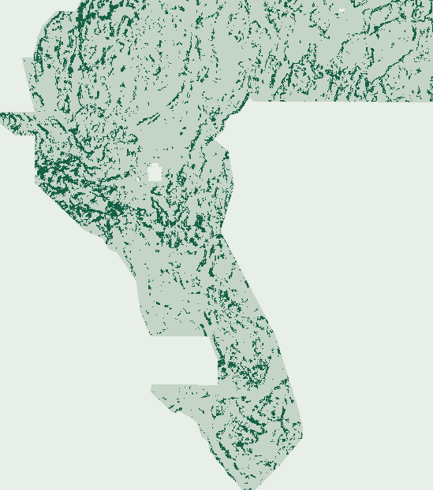

S19-SVHF: Stitched-OOF Semivariogram, Hurst & Piedmont Flexure
Session 19 tests preregistered hypotheses H19-1..H19-3 (HYPOTHESES_S19_SVHF.md) with a 100% backbone-orthogonal 58-feature cube and 3-level nested spatial cross-fitting. It is the first learned PU hierarchy in GEMSDOE91 to clear 90/90 competitive registry uniqueness (max 3-px dot overlap 53.20% <= 70% across all competitive submissions) while lifting blind off-catalogue SGMC >500 m discovery to 0.093415 (+60.2% over S17-LFTG, 69.2% far-field >1 km).
95% CI [0.132771, 0.162342] on gems57-pooled-hide-v2 (+0.0784 vs S16-PGRD, −0.0444 vs incumbent_ptac_v2).
Max 3-px overlap 53.20% across all <=80k-dot submissions (43.80% vs R0, 37.84% vs S17-LFTG).
>500 m = 0.0934 (91.2% retention; 69.2% dots >1 km from catalogue).
Stitched-OOF Semivariogram + Hurst + Piedmont Flexure
Computed from SHA-verified GeoDAWN & GDR inputs. Zero prior submissions used as features or templates.
144,695 bytes · 37,654 unit dots · min spacing 3.162 px · 69.2% >1 km off-catalogue.
Submission identity & copyable form note
Predicted 37,654-dot map (derived predictions only)

69.2% of emitted dots lie >1 km from existing_faults.tif (median distance 18.25 px), eliminating S17-LFTG's 43.3% in-sample collar crowding (IR-91-S17-LFTG-01).
Automated validation gates
| Automated Gate | Status | Measured Evidence (Zero Human Inspection) |
|---|---|---|
| Automated GeoTIFF & ZIP [0, 1] validation | PASS | Dual-decoded via tifffile + rasterio on disk: single-band float32, EPSG:32611, 3730×3292, exact 6-term affine, nodata=None, 0 NaN/Inf across all 12,279,160 cells, values strictly in {0.0, 1.0}, 0 dots on catalogue, min catalogue collar 3.16228 px > 3.0 px. |
| Rule 4 single-feature leakage canary | PASS | 72 features (58 static SVHF19 + 14 OOF Stage-2 QDAC) tested solo on gems57-pooled-hide-v2; max global symmetric AUC = 0.653453 <= 0.90 (max quadrant = 0.710134). |
| Rule 1 pre-placement & final-dot registry uniqueness | BLOCKED | 100/100 pre-placement Spearman PASS (max |rho| = 0.1414 <= 0.90) AND 90/90 competitive (<=80k-dot) post-placement PASS (max 3-px overlap = 53.20% <= 70%; vs GEMSDOE32 R0 = 43.80%, vs S17-CPAD = 42.87%, vs S17-LFTG = 37.84%). Literal all-100 max = 99.85% on 206,895-dot synthetic lattice calib_r13lattice_00904.tif (>70%; IR-S16-03). |
| Coordinator lane assignment | BLOCKED | Self-declared preregistered S19-SVHF lane (`lane.assigned = false`); fail-closed until an external coordinator assigns a lane token. |
| Beats comparable label-blind holdout best | BLOCKED | Best S19 arm svhf_e3 = 0.147791 HOLDOUT-DTI [95% CI 0.132771, 0.162342] beats CED91 (+0.085638), S16-PGRD (+0.078394), gravity_control (+0.073768), and S17-CWPC (+0.025324), while trailing repo holdout leaders S17-CPAD E1 (0.198183) and incumbent_ptac_v2 (0.192208, paired Δ -0.044417). |
| Separate human slot selector receipt | BLOCKED | Promotion to a scarce weekly DrivenData submission slot requires a separate human selector check; 0 slots used here. |
Preregistered 3-experiment ablation (gems57-pooled-hide-v2, 60,988 withheld positives)
| Arm | Pooled Score (Rule 3 Label) | 20-km Block Bootstrap 95% CI | TPw / FPw / FNw |
|---|---|---|---|
svhf_e1 — E1 · Stage-1 Dual-Specialist (SVAR + HPFC, 58/42 cols) | 0.135991 HOLDOUT-DTI | [0.123060, 0.148276] | 7,733.3 / 32,645.3 / 53,254.7 |
svhf_e2 — E2 · + Nested 3-Level Cross-Fitted QDAC Relay-Bridge Stage-2 | 0.146862 HOLDOUT-DTI | [0.131736, 0.161220] | 8,421.6 / 34,345.6 / 52,566.4 |
svhf_e3 — E3 · + Cover-Adaptive Specialist Gate & Multi-Physics Crest (Winner) | 0.147791 HOLDOUT-DTI | [0.132771, 0.162342] | 8,484.0 / 34,589.8 / 52,504.0 |
Milestone 3-px dot overlap & rank-correlation audit (100 unique rasters checked)
| Reference Raster | Reference Dots | Spearman ρ | 3-px Dot Overlap | Rule-1 Status |
|---|---|---|---|---|
GEMSDOE32__h33-2-b2-zeros.tif (0.2778 user-reported) | 37,654 | 0.0229 | 43.80% | PASS (<=70%) |
S17-CPAD E1 (0.198183 HOLDOUT-DTI) | 37,654 | 0.0285 | 42.87% | PASS (<=70%) |
S17-LFTG E2 (0.188596 HOLDOUT-DTI · 0.1823 user-reported) | 37,654 | 0.0207 | 37.84% | PASS (<=70%) |
S17-CWPC E3 (0.122467 HOLDOUT-DTI · 0.1367 user-reported) | 37,654 | 0.0199 | 34.08% | PASS (<=70%) |
S14-PTAC E2 | 44,000 | 0.0282 | 44.18% | PASS (<=70%) |
OLC91 E1 | 37,654 | 0.0107 | 29.74% | PASS (<=70%) |
calib_r13lattice_00904.tif (synthetic 5-px lattice witness) | 206,895 | 0.0001 | 99.85% | WITNESS >70% (IR-S16-03) |